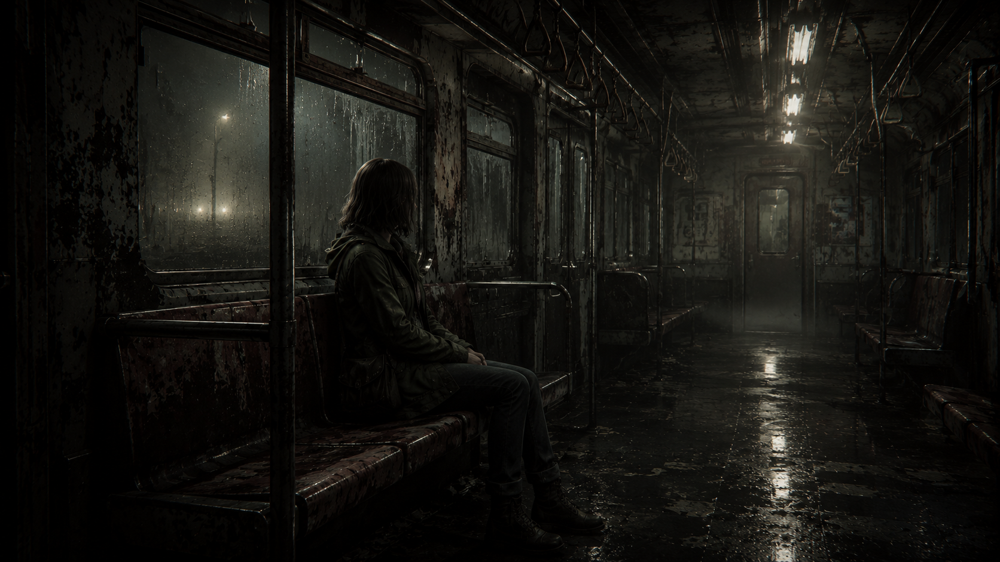

Interactive Story Game · Part 1
The Train Between Worlds
Story Description
The Train Between Worlds is a web-based nonlinear story about a girl who wakes up on a mysterious train with no memory of how she got there. The train travels between strange dreamlike stations, and each station represents something emotional that she has been avoiding. The story has a psychological horror atmosphere inspired by games like Life is Strange, Telltale Games, Silent Hill, and Resident Evil. The main character is mostly shown from behind so the player can imagine themselves in her place.
The story takes place on an abandoned train line, with different stations leading to different symbolic spaces. These include a quiet empty city, a perfect but fake life, a forgotten forest connected to childhood memories, and a flooded station where buried fears rise to the surface. The user makes choices about whether to avoid the truth, accept painful memories, choose comfort, stay in denial, or take control. Each choice leads to a different path or ending, so the player slowly discovers what the train represents.
Narrative Map
START
index.html
“The Train Between Worlds”
|
v
train.html
“You are alone on the train.”
|
|--- The Quiet City
| quietcity.html
| |
| |--- Follow the figure who looks like you
| | quiet_figure.html
| | |
| | |--- Follow the shadow to the front of the train
| | | ending4.html
| | | Ending 04: The Conductor
| | |
| | |--- Turn back before you vanish too
| | quietcity.html
| |
| |--- Hide inside the warm café
| | quiet_cafe.html
| | |
| | |--- Stay where nothing can hurt you
| | | ending1.html
| | | Ending 01: The Warm Room
| | |
| | |--- Leave before the room becomes a cage
| | quietcity.html
| |
| |--- Return to the train
| train.html
|
|--- The Perfect Life
| perfectlife.html
| |
| |--- Join the party where everyone loves you
| | perfect_party.html
| | |
| | |--- Let yourself be loved here
| | | ending2.html
| | | Ending 02: Perfect Enough
| | |
| | |--- Ask why everyone knows your name
| | perfect_glitch.html
| |
| |--- Look for what is wrong
| | perfect_glitch.html
| | |
| | |--- Ignore the loop and stay anyway
| | | ending2.html
| | | Ending 02: Perfect Enough
| | |
| | |--- Break the loop and find who controls it
| | ending4.html
| | Ending 04: The Conductor
| |
| |--- Return to the train
| train.html
|
|--- The Forgotten Forest
| forest.html
| |
| |--- Search the old backpack
| | forest_backpack.html
| | |
| | |--- Take the photo and find the child
| | | forest_child.html
| | |
| | |--- Close the backpack
| | train.html
| |
| |--- Follow the child’s voice
| | forest_child.html
| | |
| | |--- Tell her, “I remember now.”
| | | ending3.html
| | | Ending 03: The Surface
| | |
| | |--- Sit beside her and say, “I’m sorry.”
| | | ending_forest_apology.html
| | |
| | |--- Turn away before she looks at you
| | train.html
| |
| |--- Leave before you remember
| train.html
|
|--- The Flooded Station
flooded.html
|
|--- Swim toward the drowned train
| flooded_train.html
| |
| |--- Enter the drowned train and take the controls
| | ending4.html
| | Ending 04: The Conductor
| |
| |--- Swim back toward the light
| ending3.html
| Ending 03: The Surface
|
|--- Climb toward the surface
| ending3.html
| Ending 03: The Surface
|
|--- Return to the train
train.html
Possible Scene / Space

Possible scene from The Train Between Worlds: the main character sits alone inside the train, surrounded by darkness. This is the central space where the player chooses which emotional station to visit next.